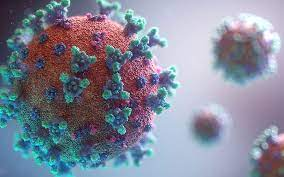

Subvariante BA.2 de ómicron en Loreto

La Gerencia Regional de Salud de Loreto informó que se detectó un caso de la subvariante BA.2, linaje descendiente de la variante ómicron del COVID-19 en una niño de 5 años. El análisis se llevó a cabo en el Centro de Investigación en Enfermedades Tropicales “Máxime Kuczynski”, a principios del mes de mayo, informó el director regional de salud de Loreto, Chaner Zumaeta, a RPP.
“Tenemos una niña menor de 5 años. Hay que precisar algo, la COVID-19 sigue en Loreto. Decirle a la población que la COVID-19 no se ha ido de Iquitos”, agregó. De acuerdo a Zumaeta, el menor de edad presenta síntomas leves, por lo que puede entenderse que se trata de un proceso habitual de la enfermedad. No obstante, se mantiene en observación constante.
El director de la Diresa de Loreto señaló que durante el mes de mayo se registró un fallecido a causa de la COVID-19, quien se estuvo automedicando.
Vale precisar que esta es el segundo caso de la subvariante BA.2 de Ómicron en la región. A través de un comunicado, la Diresa Loreto informó que el primer contagio confirmado de este tipo de linaje es una mujer adulta, procedente de Lima, a quien se le detectó este virus. Ella cuenta con las tres dosis de la vacuna contra la COVID-19.
Ante esta situación, la Gerencia Regional de Salud de Loreto ha intensificado la detección de casos mediante el tamizaje con las pruebas moleculares en todos los establecimientos de salud incluyendo los puntos de entrada, y próximamente, en el aeropuerto internacional.
Policía restringió acceso a la prensa a Palacio de Gobierno durante visita de relator de la CIDH
La policía restringió por varios minutos el acceso a los ingresos a Palacio de Gobierno esta mañana, mientras se llevaba a cabo la visita oficial del relator para la libertad de expresión de la Comisión Interamericana de Derechos Humanos (CIDH), Pedro Vaca, a Pedro Castillo.
El incidente fue registrado por las cámaras de los medios de comunicación que estuvieron esperando en la Plaza de Armas que se les permita acceder a los ingresos, tanto a la sede del Gobierno como a la Presidencia del Consejo de Ministros y que contaban con la acreditación correspondiente.
Cuando Vaca Villarreal llegó a Palacio de Gobierno, solo se permitió que él traspase el cerco policial, a pesar de los reclamos de los hombres de prensa.